TECHNICAL-CONTROL-1 — receive → dribble technical control (candidate, not frozen)
LOCAL review page — the character is a real player's model: never published. The interactive lab: 127.0.0.1:8361/sandbox/visual/technical_control1.html (Ball Control / Dribbling / Agility 1 – 99 · preset · style · preferred foot incl. two-footed · free turn angle and speed · pipelines RE1 / CURRENT · comparisons vs / vsStyle / vsFoot · views). Evidence: review_artifacts/technical_control1/evidence. One input — the movement intent; no skill-move button. Every ball contact is authoritative (the ball is launched by the simulation; the body is posed to it, never the reverse).
1 · Receive → dribble: no exit touch (phase 1) and no ball into space (phase 2)
RECEIVE-ELITE-1 ended every turn with an exit touch that sent the ball 1.6 – 2.0 m ahead for DRIBBLE-V1 to take. TECHNICAL-CONTROL-1 keeps RECEIVE-ELITE-1's approved receive (its first touch and turn) and then carries on with the same controller — the next contact is a carry touch or a technical action on the gait, no boundary. A low-Agility body that cannot turn with the first touch cushions it and turns with the ball under control (an action after braking); a ball beyond reach is chased (the run re-planned toward where the ball will be) — never released into space.
| RECEIVE-ELITE-1's receive set (stationary / running / sprinting turns × 3 seeds) | runs | max separation, receive → continuation: median · worst (m) | exit touch launch speed (median) | CLEAN | tCont median (s) | exit touches · failures (NEW) |
|---|---|---|---|---|---|---|
| 99 / 99 / 99 | 60 | RECEIVE-ELITE-1 1.70 · 2.37 → NEW 0.85 · 0.87 | 8.34 m/s → none | 60 → 60 | 0.57 → 0.69 | 0 · 0 |
| Agility 50 (BC / DRI 99) | 60 | RECEIVE-ELITE-1 1.96 · 5.67 → NEW 0.86 · 1.00 | 7.84 m/s → none | 56 → 60 | 0.78 → 0.90 | 0 · 0 |
| Agility 25 (BC / DRI 99) | 60 | RECEIVE-ELITE-1 1.96 · 5.67 → NEW 0.82 · 0.97 | 7.84 m/s → none | 54 → 60 | 0.78 → 0.96 | 0 · 0 |
tCont (RECEIVE-ELITE-1's definition: the first contact played facing the exit, running along it ≥ 2.5 m/s, the ball ≤ 1.5 m) is ~0.1 s later: the continuation is now a real carry touch on the gait rather than the launch of an exit touch.

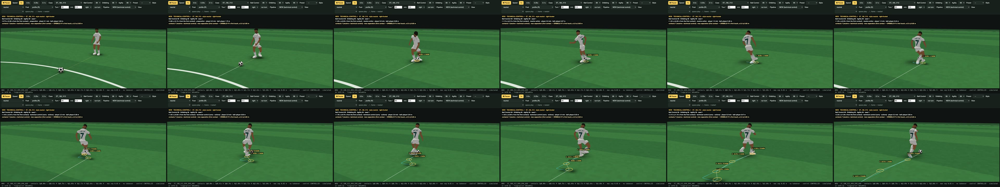

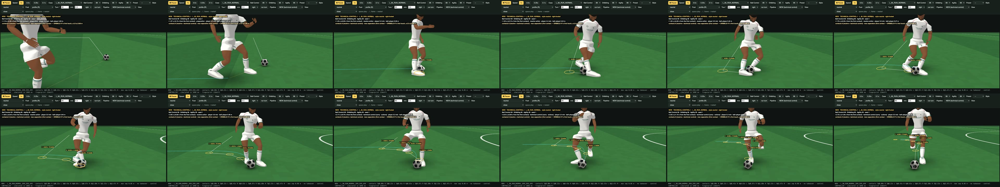

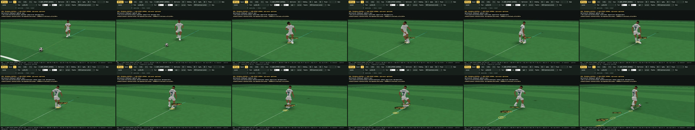
2 · Human fast dribbling (phase 3)
The body reads the authoritative contract only: the motion plan (root, facing), the gait (swing windows) and the contacts (time, foot, surface, ball). Each swing is keyframed (C¹ Hermite) from RUN-1's own swing at the running speed, its ends corrected onto this plan's toe-off and landing; a touch is a preparation → contact → follow-through inside the swing (the backswing relative to the body, plus the body's own travel); the foot lands where its motion takes it, within the leg's reach (≤ 0.27 m ahead, stance ≤ 0.78 m); the pelvis shifts only toward a loaded foot (sideways at speed, never along the run); every re-plan inherits the previous body's foot state (no pops).
| the receive chain at 99 / 99 / 99 (10 cases), each body on its own simulation | ankle acceleration in swings p95 (median) · worst frame, m/s² | IK reach error p99 (median) · worst | planted-foot slip, worst | legs fully extended (median share of frames) |
|---|---|---|---|---|
| RECEIVE-ELITE-1's body | 490 · 1386 | 32.2 cm · 85 cm | 30.3 mm | 25 % |
| TECHNICAL-CONTROL-1's body | 243 · 826 | 4.1 cm · 19 cm | 1.3 mm | 8 % |
The IK reach error is the distance between where the body wants a foot and where the leg can put it: 30 cm means a leg locked straight, reaching for a target it cannot reach — the main visible cause of the robotic look, with the snapping (acceleration) of contacts made without preparation.
| check | result |
|---|---|
| animation ON / OFF neutrality (course + chain at 99 / 80 / 50 + styles + lab sections) | 80/80 bit-identical · faults 0 |
| human-motion diagnostics (posed skeleton, 240 Hz) | contact-pose error ≤ 3.9 mm · planted-foot slip ≤ 5.3 mm · ankle acceleration p95 median 215 m/s² (RUN-1 / TURN-1.2 running: p50 84 · p95 279 · max 724) · worst single frame 1388 · IK reach error p99 median 4.0 cm, worst p99 7.0 cm · legs fully extended 7 % of frames |
| regressions: RECEIVE-MOVING-1 (CURRENT) and RECEIVE-ELITE-1 bit-identical before / after TechSim runs in the same process | 78/78 |
| receives that are not turns with a go intent (kill and hold, aerial, kill-and-go): TechSim ≡ RECEIVE-ELITE-1 | 24/24 |
| the turns: changed by design (the technical carry replaces the exit touch) | 54/54 |
| determinism: repeat runs bit-identical · the same actions at the same ticks | 300/300 · 300/300 |
| keyed Ball Control draws: the same contact index draws the same normals at every BC / DRI / AGI / style | 2093/2093 pairs · BC 99 execution error mean 0.03 m/s |
| Chrome = Node (the lab, animation off, fingerprint) | 13/13 |
| CPU (one process): ms per simulated second · worst single step | NEW median 11 (max 16) · worst step 8.2 ms · technical-control planning 0.2 ms / sim s — RECEIVE-ELITE-1 86 · CURRENT 85 (both include DRIBBLE-V1 after their hand-over) |
| protected files (RECEIVE-ELITE-1's list + RECEIVE-ELITE-1 at 140e96f1) | 837/837 identical |

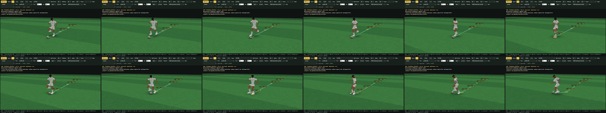

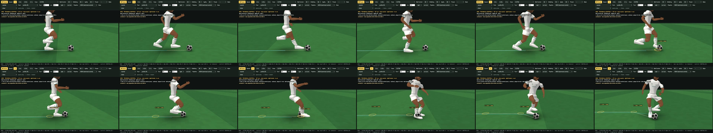

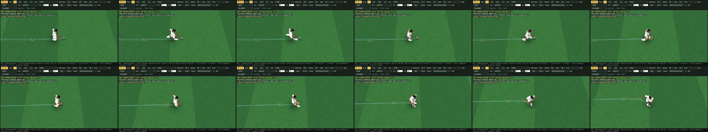

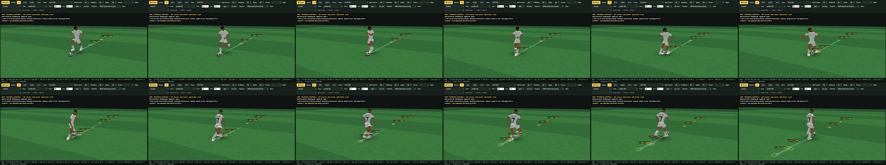

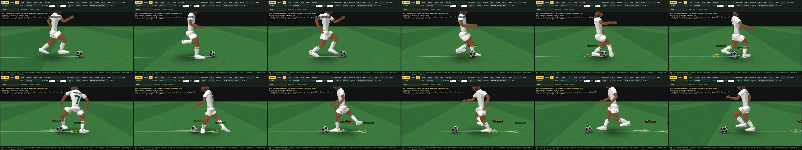

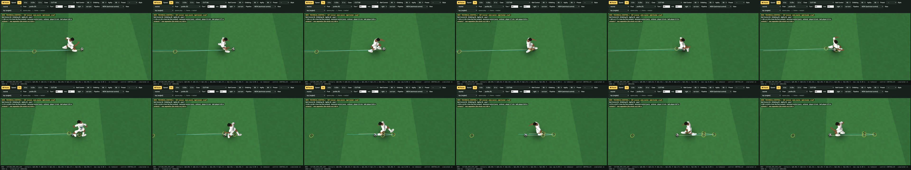

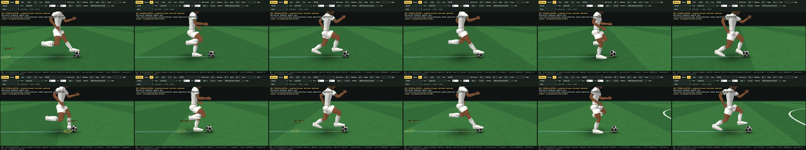

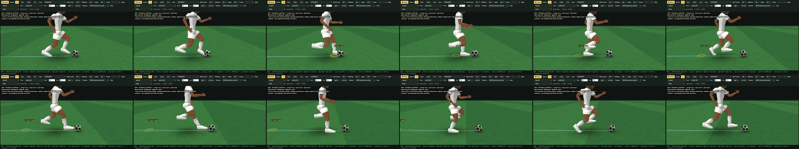

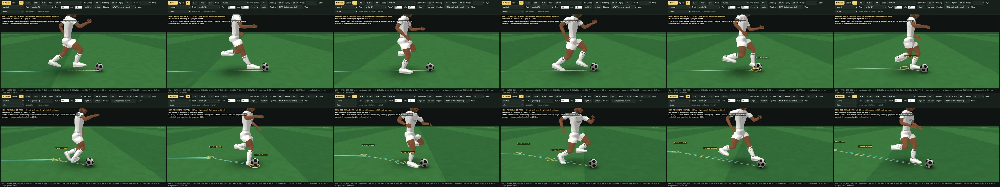
3 · The 99 / 99 / 99 reference on the technical course
| section | actions (3 seeds — turn asked at 1.2 / 1.4 / 1.6 s) | max sep. m | mean | contacts / s | interval p50 · min | orientation s | turn done s | speed min · exit | feet R / L | surfaces |
|---|---|---|---|---|---|---|---|---|---|---|
| STRAIGHT straight carry | carry carry carry | 0.86 | 0.70 | 1.26 | 0.94 · 0.63 | — | — | — · 5.50 | 60 % / 40 % | laces 100 % |
| CUT30 30° cut | outside touch / cut outside touch / cut outside touch / cut | 0.86 | 0.66 | 1.44 | 0.94 · 0.31 | 0.73 | 0.68 | 5.50 · 5.50 | 67 % / 33 % | inside 11 % · laces 67 % · outside 22 % |
| CUT60 60° cut | outside touch / cut outside touch / cut inside cut | 0.86 | 0.67 | 1.51 | 0.63 · 0.31 | 0.94 | 1.18 | 4.76 · 5.27 | 63 % / 37 % | inside 26 % · laces 63 % · outside 11 % |
| CUT90 90° turn | inside cut inside cut inside cut | 0.86 | 0.61 | 1.83 | 0.63 · 0.31 | 0.98 | 1.37 | 3.55 · 4.69 | 54 % / 46 % | inside 29 % · laces 58 % · outside 13 % |
| CUT120 120° turn | inside cut inside cut inside cut | 0.86 | 0.60 | 1.97 | 0.33 · 0.20 | 1.57 | 1.51 | 2.33 · 4.45 | 56 % / 44 % | inside 41 % · laces 59 % |
| CUT150 150° turn | Cruyff-like turn Cruyff-like turn Cruyff-like turn | 0.89 | 0.64 | 1.53 | 0.63 · 0.31 | 1.05 | 0.98 | 0.41 · 3.83 | 59 % / 41 % | inside 41 % · laces 59 % |
| CUT180 180° reversal | Cruyff-like turn Cruyff-like turn Cruyff-like turn | 0.89 | 0.64 | 1.55 | 0.69 · 0.31 | 1.08 | 0.99 | 0.01 · 3.80 | 57 % / 43 % | inside 39 % · laces 61 % |
| LR tight left-right sequence | inside cut → drag across the body → inside cut → inside cut inside cut → drag across the body → inside cut → outside touch / cut → inside cut inside cut → drag across the body → inside cut → inside cut → outside touch / cut | 0.65 | 0.45 | 2.84 | 0.34 · 0.13 | — | — | — · 3.90 | 67 % / 33 % | inside 90 % · outside 3 % · sole 8 % |
| ACCEL acceleration into space | carry carry carry | 0.86 | 0.62 | 1.56 | 0.71 · 0.35 | — | — | — · 8.50 | 43 % / 57 % | inside 29 % · laces 71 % |
| CONTEST45 45° change of direction, the space ahead closed (disguise) | body feint + outside exit body feint + outside exit body feint + outside exit | 0.75 | 0.58 | 1.76 | 0.64 · 0.32 | 0.76 | 0.89 | 4.63 · 5.00 | 100 % / — | inside 9 % · laces 77 % · outside 14 % |
| RECEIVE receive → turn → dribble (L_90_RUN_NORMAL, ST_90_V12, L_150_RUN_NORMAL, ST_180_V12, F_180R_SPRINT_NORMAL) | carry carry carry carry carry carry carry carry carry carry carry carry carry carry carry | 0.86 | 0.64 | 1.96 | 0.36 · 0.20 | 0.15 | 0.38 | 0.92 · 5.60 | 53 % / 47 % | inside 58 % · laces 39 % · sole 3 % |
4 · The technical vocabulary and its automatic selection
Nine actions, each a football answer: carry touch (sophistication 0, 0–30°) · outside touch / cut (sophistication 0.1, 12–70°) · inside cut (sophistication 0.15, 30–115°) · sole stop (sophistication 0.15, 0–180°) · sole drag-back (sophistication 0.45, 115–180°) · Cruyff-like turn (sophistication 0.55, 105–180°) · drag across the body (sophistication 0.5, 35–95°) · double touch (inside → inside / outside) (sophistication 0.55, 25–90°) · body feint + outside exit (sophistication 0.65, 25–100°). For an intent change the controller scores a small feasible set — family × the next swings — on fit, time to the contact, the body's braking (Agility), the speed lost, sophistication (Dribbling's smooth weight × a simplicity prior), the style and the contest proxy; deterministic, no randomness. The feint is only offered when the space calls for disguise (CONTEST45).
Usage over a spread of situations (35 – 180° × 3 / 4.5 / 5.5 / 7 m/s × 3 seeds, the uniform presets)
| preset | actions | sophisticated share | counts |
|---|---|---|---|
| 99/99/99 | 132 | 30 % | inside cut 56 · Cruyff-like turn 39 · outside touch / cut 28 · sole drag-back 9 |
| 90/90/90 | 132 | 14 % | inside cut 53 · outside touch / cut 31 · sole drag-back 29 · Cruyff-like turn 19 |
| 80/80/80 | 132 | 14 % | inside cut 51 · outside touch / cut 33 · sole drag-back 30 · Cruyff-like turn 18 |
| 70/70/70 | 132 | 11 % | inside cut 48 · outside touch / cut 36 · sole drag-back 33 · Cruyff-like turn 15 |
| 60/60/60 | 132 | 2 % | inside cut 48 · sole drag-back 45 · outside touch / cut 36 · Cruyff-like turn 3 |
| 50/50/50 | 132 | 2 % | inside cut 46 · sole drag-back 45 · outside touch / cut 38 · Cruyff-like turn 3 |

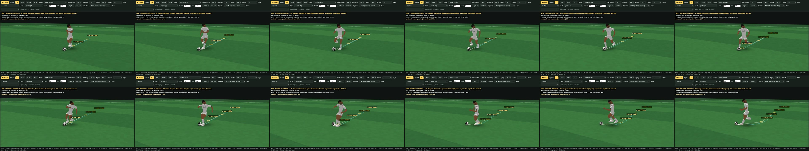

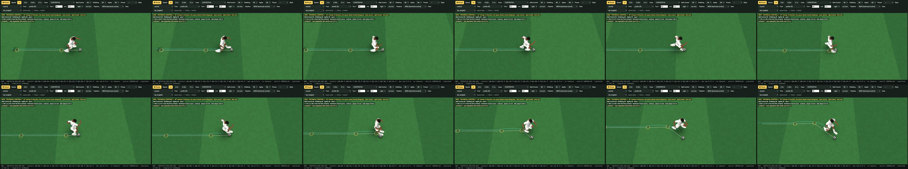

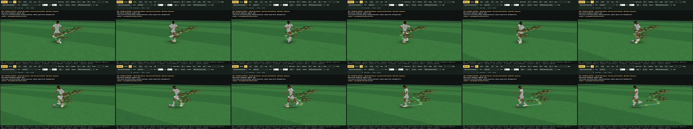

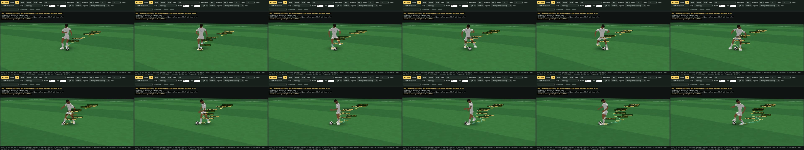

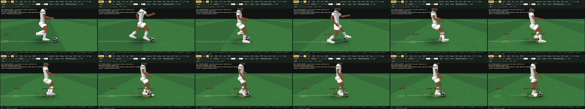

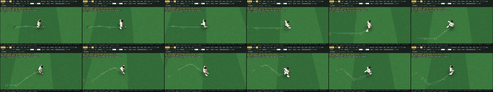
5 · Ball Control, Dribbling, Agility — each worked backward alone (1 – 99)
Ball Control: the precision of each contact (RECEIVE-KILL-1.2 B's curve unchanged × the keyed draws), a dribble touch's difficulty now includes the running speed and the impulse — a low rating means a looser ball and more recovery touches, never a different body. Dribbling: cadence, cluster speed, reach, reaction and the smooth sophistication weight. Agility: braking, redirection, hip yaw, pivot, acceleration, the plant's entry speed — a low rating means a slower body and more steps; the ball stays close.
Ball Control alone
| runs | max separation (median · worst), m | mean sep. | contacts / s | interval p50 · min, s | orientation, s | turn done, s | speed loss · exit, m/s | recovery / run | receives CLEAN · tCont | technical share | actions | surfaces | |
|---|---|---|---|---|---|---|---|---|---|---|---|---|---|
| BC 1 | 45 | 0.95 · 1.19 | 0.62 | 1.72 | 0.63 · 0.31 | 0.78 | 0.85 | 2.65 · 5.09 | 1.18 | 15/15 · 0.65 | 34 % | inside cut 17 · outside touch / cut 8 · Cruyff-like turn 7 · body feint + outside exit 3 · drag across the body 3 | inside 49 % · laces 42 % · outside 7 % · sole 2 % |
| BC 25 | 45 | 0.89 · 1.09 | 0.61 | 1.68 | 0.63 · 0.31 | 0.91 | 0.98 | 2.48 · 4.95 | 0.31 | 15/15 · 0.70 | 34 % | inside cut 15 · outside touch / cut 8 · Cruyff-like turn 6 · body feint + outside exit 3 · drag across the body 3 | inside 46 % · laces 46 % · outside 6 % · sole 2 % |
| BC 40 | 45 | 0.89 · 1.03 | 0.61 | 1.71 | 0.63 · 0.31 | 0.91 | 0.98 | 2.43 · 4.95 | 0.18 | 15/15 · 0.70 | 34 % | inside cut 15 · outside touch / cut 8 · Cruyff-like turn 6 · body feint + outside exit 3 · drag across the body 3 | inside 46 % · laces 46 % · outside 6 % · sole 2 % |
| BC 50 | 45 | 0.89 · 1.01 | 0.62 | 1.71 | 0.63 · 0.31 | 0.92 | 1.00 | 2.42 · 4.95 | 0.07 | 15/15 · 0.70 | 34 % | inside cut 15 · outside touch / cut 8 · Cruyff-like turn 6 · body feint + outside exit 3 · drag across the body 3 | inside 47 % · laces 47 % · outside 5 % · sole 2 % |
| BC 60 | 45 | 0.89 · 0.98 | 0.61 | 1.71 | 0.63 · 0.31 | 0.92 | 1.00 | 2.42 · 4.95 | 0.07 | 15/15 · 0.70 | 34 % | inside cut 15 · outside touch / cut 8 · Cruyff-like turn 6 · body feint + outside exit 3 · drag across the body 3 | inside 46 % · laces 48 % · outside 4 % · sole 2 % |
| BC 70 | 45 | 0.88 · 0.96 | 0.61 | 1.65 | 0.63 · 0.31 | 0.92 | 1.00 | 2.41 · 4.95 | 0.04 | 15/15 · 0.70 | 34 % | inside cut 15 · outside touch / cut 8 · Cruyff-like turn 6 · body feint + outside exit 3 · drag across the body 3 | inside 46 % · laces 49 % · outside 4 % · sole 2 % |
| BC 80 | 45 | 0.87 · 0.94 | 0.61 | 1.65 | 0.63 · 0.31 | 1.02 | 1.09 | 2.40 · 4.65 | 0.00 | 15/15 · 0.70 | 34 % | inside cut 16 · outside touch / cut 7 · Cruyff-like turn 6 · body feint + outside exit 3 · drag across the body 3 | inside 44 % · laces 50 % · outside 4 % · sole 2 % |
| BC 90 | 45 | 0.86 · 0.92 | 0.63 | 1.58 | 0.63 · 0.31 | 1.02 | 1.09 | 2.40 · 4.65 | 0.00 | 15/15 · 0.70 | 34 % | inside cut 16 · outside touch / cut 7 · Cruyff-like turn 6 · body feint + outside exit 3 · drag across the body 3 | inside 44 % · laces 51 % · outside 4 % · sole 2 % |
| BC 99 | 45 | 0.86 · 0.90 | 0.64 | 1.58 | 0.63 · 0.31 | 1.02 | 1.09 | 2.40 · 4.65 | 0.00 | 15/15 · 0.70 | 34 % | inside cut 16 · outside touch / cut 7 · Cruyff-like turn 6 · body feint + outside exit 3 · drag across the body 3 | inside 44 % · laces 50 % · outside 4 % · sole 2 % |
Dribbling alone
| runs | max separation (median · worst), m | mean sep. | contacts / s | interval p50 · min, s | orientation, s | turn done, s | speed loss · exit, m/s | recovery / run | receives CLEAN · tCont | technical share | actions | surfaces | |
|---|---|---|---|---|---|---|---|---|---|---|---|---|---|
| DRI 1 | 45 | 1.09 · 1.49 | 0.85 | 1.49 | 0.67 · 0.63 | 1.27 | 1.36 | 2.42 · 4.31 | 0.27 | 15/15 · 0.62 | 0 % | outside touch / cut 12 · inside cut 10 · sole drag-back 6 | inside 29 % · laces 64 % · outside 4 % · sole 3 % |
| DRI 25 | 45 | 1.04 · 1.41 | 0.81 | 1.51 | 0.68 · 0.63 | 1.27 | 1.36 | 2.42 · 4.31 | 0.27 | 15/15 · 0.60 | 0 % | outside touch / cut 12 · inside cut 9 · sole drag-back 6 | inside 28 % · laces 64 % · outside 4 % · sole 3 % |
| DRI 40 | 45 | 1.02 · 1.39 | 0.79 | 1.53 | 0.64 · 0.63 | 1.27 | 1.36 | 2.43 · 4.31 | 0.27 | 15/15 · 0.60 | 0 % | outside touch / cut 12 · inside cut 9 · sole drag-back 6 | inside 30 % · laces 63 % · outside 4 % · sole 3 % |
| DRI 50 | 45 | 1.00 · 1.17 | 0.76 | 1.58 | 0.64 · 0.34 | 1.27 | 1.36 | 2.43 · 4.31 | 0.27 | 15/15 · 0.63 | 0 % | inside cut 13 · outside touch / cut 12 · sole drag-back 6 | inside 33 % · laces 59 % · outside 5 % · sole 3 % |
| DRI 60 | 45 | 0.96 · 1.02 | 0.73 | 1.60 | 0.63 · 0.31 | 1.10 | 1.20 | 2.48 · 4.26 | 0.00 | 15/15 · 0.70 | 10 % | inside cut 14 · outside touch / cut 11 · Cruyff-like turn 3 · sole drag-back 3 | inside 40 % · laces 55 % · outside 3 % · sole 2 % |
| DRI 70 | 45 | 0.93 · 1.00 | 0.70 | 1.60 | 0.64 · 0.31 | 1.09 | 1.19 | 2.47 · 4.31 | 0.00 | 15/15 · 0.76 | 13 % | inside cut 14 · outside touch / cut 11 · Cruyff-like turn 4 · sole drag-back 2 | inside 43 % · laces 52 % · outside 3 % · sole 2 % |
| DRI 80 | 45 | 0.90 · 0.99 | 0.67 | 1.60 | 0.63 · 0.31 | 1.06 | 1.17 | 2.47 · 4.31 | 0.00 | 15/15 · 0.76 | 13 % | inside cut 15 · outside touch / cut 11 · Cruyff-like turn 4 · sole drag-back 2 | inside 42 % · laces 52 % · outside 4 % · sole 2 % |
| DRI 90 | 45 | 0.88 · 0.93 | 0.66 | 1.56 | 0.64 · 0.31 | 0.99 | 1.07 | 2.42 · 4.60 | 0.00 | 15/15 · 0.63 | 35 % | inside cut 16 · Cruyff-like turn 6 · outside touch / cut 6 · body feint + outside exit 3 · drag across the body 3 | inside 41 % · laces 53 % · outside 4 % · sole 2 % |
| DRI 99 | 45 | 0.86 · 0.90 | 0.64 | 1.58 | 0.63 · 0.31 | 1.02 | 1.09 | 2.40 · 4.65 | 0.00 | 15/15 · 0.70 | 34 % | inside cut 16 · outside touch / cut 7 · Cruyff-like turn 6 · body feint + outside exit 3 · drag across the body 3 | inside 44 % · laces 50 % · outside 4 % · sole 2 % |
Agility alone
| runs | max separation (median · worst), m | mean sep. | contacts / s | interval p50 · min, s | orientation, s | turn done, s | speed loss · exit, m/s | recovery / run | receives CLEAN · tCont | technical share | actions | surfaces | |
|---|---|---|---|---|---|---|---|---|---|---|---|---|---|
| AGI 1 | 45 | 0.86 · 0.93 | 0.59 | 1.85 | 0.60 · 0.31 | 1.39 | 1.58 | 2.74 · 3.45 | 0.00 | 15/15 · 1.19 | 36 % | inside cut 14 · outside touch / cut 11 · Cruyff-like turn 9 · body feint + outside exit 3 · double touch (inside → inside / outside) 1 · drag across the body 1 | inside 53 % · laces 38 % · outside 8 % · sole 0 % |
| AGI 25 | 45 | 0.86 · 0.97 | 0.60 | 1.83 | 0.63 · 0.30 | 1.36 | 1.50 | 2.68 · 3.63 | 0.07 | 15/15 · 1.13 | 29 % | inside cut 14 · outside touch / cut 11 · Cruyff-like turn 6 · body feint + outside exit 3 · drag across the body 1 | inside 48 % · laces 44 % · outside 7 % · sole 1 % |
| AGI 40 | 45 | 0.86 · 0.96 | 0.60 | 1.83 | 0.63 · 0.30 | 1.35 | 1.47 | 2.67 · 3.68 | 0.00 | 15/15 · 0.93 | 29 % | inside cut 14 · outside touch / cut 10 · Cruyff-like turn 6 · body feint + outside exit 3 · drag across the body 1 | inside 50 % · laces 42 % · outside 7 % · sole 1 % |
| AGI 50 | 45 | 0.86 · 0.95 | 0.60 | 1.80 | 0.63 · 0.31 | 1.28 | 1.39 | 2.72 · 3.49 | 0.00 | 15/15 · 0.92 | 26 % | inside cut 13 · outside touch / cut 10 · Cruyff-like turn 5 · body feint + outside exit 3 · sole drag-back 2 · drag across the body 1 | inside 48 % · laces 43 % · outside 7 % · sole 2 % |
| AGI 60 | 45 | 0.86 · 1.01 | 0.62 | 1.81 | 0.63 · 0.31 | 1.25 | 1.34 | 2.62 · 3.72 | 0.00 | 15/15 · 0.83 | 40 % | inside cut 15 · drag across the body 6 · Cruyff-like turn 5 · outside touch / cut 5 · body feint + outside exit 3 · sole drag-back 1 | inside 48 % · laces 44 % · outside 5 % · sole 3 % |
| AGI 70 | 45 | 0.86 · 1.01 | 0.63 | 1.80 | 0.63 · 0.30 | 1.24 | 1.31 | 2.57 · 3.85 | 0.00 | 15/15 · 0.78 | 37 % | inside cut 15 · outside touch / cut 6 · Cruyff-like turn 5 · drag across the body 5 · body feint + outside exit 3 · sole drag-back 1 | inside 48 % · laces 45 % · outside 5 % · sole 2 % |
| AGI 80 | 45 | 0.86 · 1.00 | 0.63 | 1.79 | 0.63 · 0.27 | 1.23 | 1.27 | 2.50 · 3.98 | 0.00 | 15/15 · 0.80 | 37 % | inside cut 15 · outside touch / cut 6 · Cruyff-like turn 5 · drag across the body 5 · body feint + outside exit 3 · sole drag-back 1 | inside 47 % · laces 46 % · outside 4 % · sole 3 % |
| AGI 90 | 45 | 0.86 · 0.98 | 0.62 | 1.79 | 0.63 · 0.31 | 1.14 | 1.23 | 2.48 · 4.07 | 0.09 | 15/15 · 0.75 | 37 % | inside cut 15 · outside touch / cut 6 · Cruyff-like turn 5 · drag across the body 5 · body feint + outside exit 3 · sole drag-back 1 | inside 45 % · laces 50 % · outside 3 % · sole 3 % |
| AGI 99 | 45 | 0.86 · 0.90 | 0.64 | 1.58 | 0.63 · 0.31 | 1.02 | 1.09 | 2.40 · 4.65 | 0.00 | 15/15 · 0.70 | 34 % | inside cut 16 · outside touch / cut 7 · Cruyff-like turn 6 · body feint + outside exit 3 · drag across the body 3 | inside 44 % · laces 50 % · outside 4 % · sole 2 % |
6 · Combined ratings and mixed archetypes
| runs | max separation (median · worst), m | mean sep. | contacts / s | interval p50 · min, s | orientation, s | turn done, s | speed loss · exit, m/s | recovery / run | receives CLEAN · tCont | technical share | actions | surfaces | |
|---|---|---|---|---|---|---|---|---|---|---|---|---|---|
| 99/99/99 | 45 | 0.86 · 0.90 | 0.64 | 1.58 | 0.63 · 0.31 | 1.02 | 1.09 | 2.40 · 4.65 | 0.00 | 15/15 · 0.70 | 34 % | inside cut 16 · outside touch / cut 7 · Cruyff-like turn 6 · body feint + outside exit 3 · drag across the body 3 | inside 44 % · laces 50 % · outside 4 % · sole 2 % |
| 90/90/90 | 45 | 0.88 · 1.01 | 0.63 | 1.79 | 0.63 · 0.31 | 1.11 | 1.19 | 2.48 · 4.29 | 0.13 | 15/15 · 0.75 | 26 % | inside cut 15 · outside touch / cut 6 · sole drag-back 5 · drag across the body 5 · body feint + outside exit 3 · Cruyff-like turn 1 | inside 43 % · laces 50 % · outside 3 % · sole 4 % |
| 80/80/80 | 45 | 0.92 · 1.07 | 0.66 | 1.75 | 0.63 · 0.31 | 1.05 | 1.19 | 2.58 · 3.95 | 0.00 | 15/15 · 0.80 | 0 % | inside cut 15 · outside touch / cut 12 · sole drag-back 6 | inside 44 % · laces 49 % · outside 5 % · sole 3 % |
| 70/70/70 | 45 | 0.95 · 1.11 | 0.68 | 1.75 | 0.63 · 0.31 | 1.09 | 1.25 | 2.65 · 3.78 | 0.04 | 15/15 · 0.90 | 0 % | inside cut 13 · outside touch / cut 12 · sole drag-back 6 | inside 47 % · laces 46 % · outside 5 % · sole 3 % |
| 60/60/60 | 45 | 1.00 · 1.17 | 0.71 | 1.75 | 0.63 · 0.31 | 1.07 | 1.24 | 2.72 · 3.67 | 0.20 | 15/15 · 0.88 | 0 % | inside cut 13 · outside touch / cut 12 · sole drag-back 6 | inside 48 % · laces 44 % · outside 6 % · sole 3 % |
| 50/50/50 | 45 | 1.03 · 1.59 | 0.73 | 1.60 | 0.63 · 0.35 | 1.14 | 1.34 | 2.76 · 3.49 | 0.29 | 15/15 · 1.12 | 0 % | inside cut 12 · outside touch / cut 12 · sole drag-back 6 | inside 46 % · laces 47 % · outside 4 % · sole 3 % |
| BC99/D99/A50 | 45 | 0.86 · 0.95 | 0.60 | 1.80 | 0.63 · 0.31 | 1.28 | 1.39 | 2.72 · 3.49 | 0.00 | 15/15 · 0.92 | 26 % | inside cut 13 · outside touch / cut 10 · Cruyff-like turn 5 · body feint + outside exit 3 · sole drag-back 2 · drag across the body 1 | inside 48 % · laces 43 % · outside 7 % · sole 2 % |
| BC99/D50/A99 | 45 | 1.00 · 1.17 | 0.76 | 1.58 | 0.64 · 0.34 | 1.27 | 1.36 | 2.43 · 4.31 | 0.27 | 15/15 · 0.63 | 0 % | inside cut 13 · outside touch / cut 12 · sole drag-back 6 | inside 33 % · laces 59 % · outside 5 % · sole 3 % |
| BC50/D99/A99 | 45 | 0.89 · 1.01 | 0.62 | 1.71 | 0.63 · 0.31 | 0.92 | 1.00 | 2.42 · 4.95 | 0.07 | 15/15 · 0.70 | 34 % | inside cut 15 · outside touch / cut 8 · Cruyff-like turn 6 · body feint + outside exit 3 · drag across the body 3 | inside 47 % · laces 47 % · outside 5 % · sole 2 % |
| 95/95/55 | 45 | 0.87 · 1.03 | 0.62 | 1.79 | 0.63 · 0.31 | 1.26 | 1.34 | 2.65 · 3.73 | 0.00 | 15/15 · 0.90 | 21 % | inside cut 14 · outside touch / cut 10 · Cruyff-like turn 3 · body feint + outside exit 3 · sole drag-back 3 · drag across the body 1 | inside 47 % · laces 45 % · outside 7 % · sole 2 % |
| 95/55/95 | 45 | 0.99 · 1.05 | 0.75 | 1.54 | 0.64 · 0.34 | 1.15 | 1.25 | 2.50 · 4.08 | 0.13 | 15/15 · 0.65 | 0 % | inside cut 13 · outside touch / cut 12 · sole drag-back 6 | inside 35 % · laces 58 % · outside 5 % · sole 3 % |
| 55/95/95 | 45 | 0.90 · 0.97 | 0.61 | 1.83 | 0.63 · 0.31 | 1.06 | 1.13 | 2.48 · 4.36 | 0.13 | 15/15 · 0.72 | 31 % | inside cut 14 · outside touch / cut 7 · drag across the body 5 · Cruyff-like turn 3 · body feint + outside exit 3 · sole drag-back 3 | inside 48 % · laces 45 % · outside 4 % · sole 3 % |

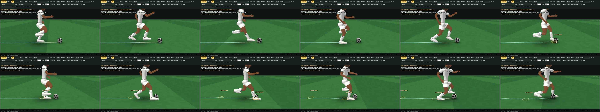

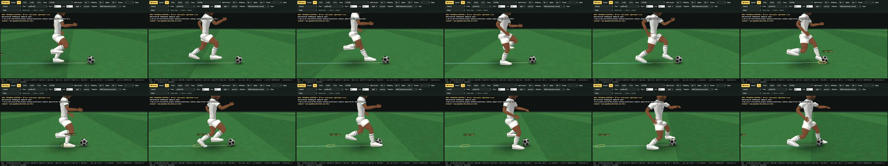

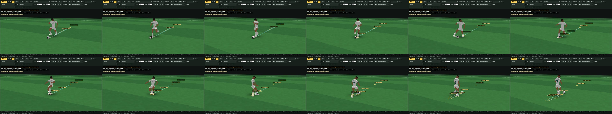

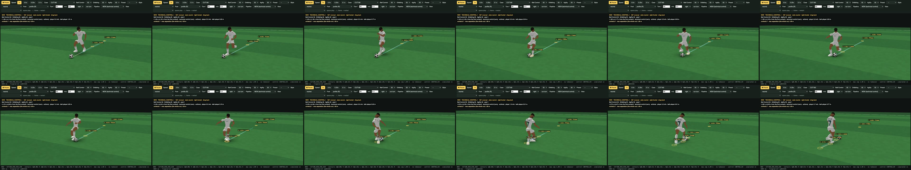
7 · Dribbling styles at identical ratings (90 / 90 / 90)
Style is tendency, never capability: it weights the choices (foot, surface, rhythm, technical / feint readiness, directness) inside what the attributes allow; it changes no limit and no draw (keyed draws 2093/2093 identical across styles). neutral — foot 0.5, rhythm 0.5, technical 0.5, feint 0.4, direct 0.5 · dominant-foot carrier — foot 0.92, rhythm 0.55, technical 0.4, feint 0.25, direct 0.6 · two-foot technician — foot 0.08, rhythm 0.7, technical 0.55, feint 0.25, direct 0.5 · direct runner — foot 0.55, rhythm 0.15, technical 0.15, feint 0.1, direct 0.95 · close-control technician — foot 0.4, rhythm 0.95, technical 0.85, feint 0.25, direct 0.3 · feint-heavy dribbler — foot 0.6, rhythm 0.6, technical 0.65, feint 0.95, direct 0.4.
| runs | max separation (median · worst), m | mean sep. | contacts / s | interval p50 · min, s | orientation, s | turn done, s | speed loss · exit, m/s | recovery / run | receives CLEAN · tCont | technical share | actions | surfaces | |
|---|---|---|---|---|---|---|---|---|---|---|---|---|---|
| neutral | 45 | 0.88 · 1.01 | 0.63 | 1.79 | 0.63 · 0.31 | 1.11 | 1.19 | 2.48 · 4.29 | 0.13 | 15/15 · 0.75 | 26 % | inside cut 15 · outside touch / cut 6 · sole drag-back 5 · drag across the body 5 · body feint + outside exit 3 · Cruyff-like turn 1 | inside 43 % · laces 50 % · outside 3 % · sole 4 % |
| dominant-foot carrier | 45 | 0.82 · 1.07 | 0.58 | 1.92 | 0.63 · 0.26 | 1.02 | 1.04 | 2.44 · 4.71 | 0.13 | 15/15 · 0.75 | 9 % | inside cut 19 · outside touch / cut 9 · Cruyff-like turn 3 · sole drag-back 3 | inside 30 % · laces 62 % · outside 7 % · sole 2 % |
| two-foot technician | 45 | 0.69 · 0.86 | 0.55 | 2.40 | 0.34 · 0.20 | 1.04 | 1.01 | 2.43 · 4.71 | 0.13 | 15/15 · 0.75 | 9 % | inside cut 18 · outside touch / cut 11 · Cruyff-like turn 3 · sole drag-back 3 | inside 61 % · laces 35 % · outside 3 % · sole 1 % |
| direct runner | 45 | 0.90 · 1.10 | 0.66 | 1.52 | 0.63 · 0.31 | 1.03 | 1.18 | 2.51 · 3.97 | 0.09 | 15/15 · 0.75 | 18 % | inside cut 11 · outside touch / cut 11 · Cruyff-like turn 5 · sole drag-back 1 | inside 40 % · laces 54 % · outside 5 % · sole 1 % |
| close-control technician | 45 | 0.55 · 0.69 | 0.49 | 3.28 | 0.31 · 0.20 | 0.95 | 0.92 | 2.44 · 4.90 | 0.13 | 15/15 · 0.75 | 11 % | inside cut 16 · outside touch / cut 12 · sole drag-back 4 · Cruyff-like turn 2 · drag across the body 2 | inside 90 % · laces 6 % · outside 2 % · sole 1 % |
| feint-heavy dribbler | 45 | 0.69 · 0.89 | 0.56 | 2.36 | 0.33 · 0.21 | 1.04 | 1.01 | 2.43 · 4.71 | 0.13 | 15/15 · 0.75 | 31 % | inside cut 14 · outside touch / cut 7 · drag across the body 5 · Cruyff-like turn 3 · body feint + outside exit 3 · sole drag-back 3 | inside 55 % · laces 38 % · outside 4 % · sole 2 % |
Preferred foot (right · left · two-footed) × neutral / dominant-foot / two-foot
| runs | max separation (median · worst), m | mean sep. | contacts / s | interval p50 · min, s | orientation, s | turn done, s | speed loss · exit, m/s | recovery / run | receives CLEAN · tCont | technical share | actions | surfaces | |
|---|---|---|---|---|---|---|---|---|---|---|---|---|---|
| right-footed · neutral feet R 60 % / L 40 % | 45 | 0.88 · 1.01 | 0.63 | 1.79 | 0.63 · 0.31 | 1.11 | 1.19 | 2.48 · 4.29 | 0.13 | 15/15 · 0.75 | 26 % | inside cut 15 · outside touch / cut 6 · sole drag-back 5 · drag across the body 5 · body feint + outside exit 3 · Cruyff-like turn 1 | inside 43 % · laces 50 % · outside 3 % · sole 4 % |
| right-footed · dominant-foot carrier feet R 91 % / L 9 % | 45 | 0.82 · 1.07 | 0.58 | 1.92 | 0.63 · 0.26 | 1.02 | 1.04 | 2.44 · 4.71 | 0.13 | 15/15 · 0.75 | 9 % | inside cut 19 · outside touch / cut 9 · Cruyff-like turn 3 · sole drag-back 3 | inside 30 % · laces 62 % · outside 7 % · sole 2 % |
| right-footed · two-foot technician feet R 62 % / L 38 % | 45 | 0.69 · 0.86 | 0.55 | 2.40 | 0.34 · 0.20 | 1.04 | 1.01 | 2.43 · 4.71 | 0.13 | 15/15 · 0.75 | 9 % | inside cut 18 · outside touch / cut 11 · Cruyff-like turn 3 · sole drag-back 3 | inside 61 % · laces 35 % · outside 3 % · sole 1 % |
| left-footed · neutral feet R 43 % / L 57 % | 45 | 0.89 · 1.01 | 0.63 | 1.79 | 0.63 · 0.31 | 1.13 | 1.22 | 2.49 · 4.29 | 0.13 | 15/15 · 0.75 | 11 % | inside cut 19 · outside touch / cut 7 · sole drag-back 5 · body feint + outside exit 3 · Cruyff-like turn 1 | inside 46 % · laces 50 % · outside 2 % · sole 2 % |
| left-footed · dominant-foot carrier feet R 7 % / L 93 % | 45 | 0.78 · 0.96 | 0.57 | 1.88 | 0.63 · 0.31 | 0.87 | 1.04 | 2.53 · 4.57 | 0.13 | 15/15 · 0.82 | 10 % | inside cut 22 · sole drag-back 3 · outside touch / cut 3 · Cruyff-like turn 3 | inside 32 % · laces 65 % · outside 2 % · sole 2 % |
| left-footed · two-foot technician feet R 40 % / L 60 % | 45 | 0.69 · 0.84 | 0.55 | 2.40 | 0.33 · 0.22 | 1.04 | 1.01 | 2.42 · 4.70 | 0.13 | 15/15 · 0.75 | 9 % | inside cut 19 · outside touch / cut 10 · sole drag-back 3 · Cruyff-like turn 3 | inside 61 % · laces 35 % · outside 2 % · sole 1 % |
| two-footed · neutral feet R 58 % / L 42 % | 45 | 0.88 · 1.01 | 0.63 | 1.79 | 0.63 · 0.31 | 1.11 | 1.19 | 2.48 · 4.29 | 0.13 | 15/15 · 0.75 | 26 % | inside cut 15 · outside touch / cut 6 · sole drag-back 5 · drag across the body 5 · body feint + outside exit 3 · Cruyff-like turn 1 | inside 43 % · laces 50 % · outside 3 % · sole 4 % |
| two-footed · dominant-foot carrier feet R 80 % / L 20 % | 45 | 0.86 · 1.07 | 0.60 | 1.92 | 0.63 · 0.26 | 1.02 | 1.04 | 2.44 · 4.71 | 0.13 | 15/15 · 0.75 | 9 % | inside cut 19 · outside touch / cut 9 · Cruyff-like turn 3 · sole drag-back 3 | inside 37 % · laces 55 % · outside 7 % · sole 2 % |
| two-footed · two-foot technician feet R 60 % / L 40 % | 45 | 0.69 · 0.86 | 0.55 | 2.40 | 0.34 · 0.20 | 1.04 | 1.01 | 2.43 · 4.71 | 0.13 | 15/15 · 0.75 | 9 % | inside cut 18 · outside touch / cut 11 · Cruyff-like turn 3 · sole drag-back 3 | inside 61 % · laces 35 % · outside 2 % · sole 1 % |
8 · The full chain and the DRIBBLE-V1 bridge
With the bridge off (the default) TECHNICAL-CONTROL-1 carries at every speed; with "sprint" it hands a straight open-space sprint carry to the frozen DRIBBLE-V1 through RECEIVE-ELITE-1's hand-over touch (DRIBBLE-V1's own contract: window ahead, lateral ≤ 0.25 m, ball ≤ runner + 1 m/s); after the takeover the separation is DRIBBLE-V1's own sprint carry.
| preset | bridge | runs | receives CLEAN | tCont median s | taken over by DRIBBLE-V1 | takeover median s | max separation median · worst, m | recovery / run |
|---|---|---|---|---|---|---|---|---|
| 99/99/99 | off (TECHNICAL-CONTROL-1 carries at every speed) | 33 | 30/30 | 0.63 | 0/33 | — | 0.79 · 0.87 | 0.00 |
| 99/99/99 | sprint (hands a straight sprint carry to DRIBBLE-V1) | 33 | 30/30 | 0.63 | 21/33 | 2.43 | 2.21 · 2.52 | 0.00 |
| 90/90/90 | off (TECHNICAL-CONTROL-1 carries at every speed) | 33 | 30/30 | 0.66 | 0/33 | — | 0.84 · 1.01 | 0.00 |
| 90/90/90 | sprint (hands a straight sprint carry to DRIBBLE-V1) | 33 | 30/30 | 0.66 | 21/33 | 2.43 | 2.19 · 2.63 | 0.00 |
| 80/80/80 | off (TECHNICAL-CONTROL-1 carries at every speed) | 33 | 30/30 | 0.70 | 0/33 | — | 0.86 · 1.07 | 0.03 |
| 80/80/80 | sprint (hands a straight sprint carry to DRIBBLE-V1) | 33 | 30/30 | 0.70 | 21/33 | 2.39 | 2.14 · 2.63 | 0.03 |
| 70/70/70 | off (TECHNICAL-CONTROL-1 carries at every speed) | 33 | 30/30 | 0.86 | 0/33 | — | 0.93 · 1.11 | 0.12 |
| 70/70/70 | sprint (hands a straight sprint carry to DRIBBLE-V1) | 33 | 30/30 | 0.86 | 21/33 | 2.66 | 2.15 · 2.72 | 0.12 |
| 60/60/60 | off (TECHNICAL-CONTROL-1 carries at every speed) | 33 | 30/30 | 0.85 | 0/33 | — | 0.96 · 1.17 | 0.45 |
| 60/60/60 | sprint (hands a straight sprint carry to DRIBBLE-V1) | 33 | 30/30 | 0.85 | 21/33 | 2.68 | 2.11 · 4.25 | 0.36 |
| 50/50/50 | off (TECHNICAL-CONTROL-1 carries at every speed) | 33 | 30/30 | 1.07 | 0/33 | — | 0.97 · 1.59 | 0.79 |
| 50/50/50 | sprint (hands a straight sprint carry to DRIBBLE-V1) | 33 | 30/30 | 1.07 | 21/33 | 2.57 | 2.08 · 3.90 | 0.64 |
Built 2026-10-19 13:33 from the evidence of record. Not frozen — presented for review.